{kind=link}
Studenti: Luca Landolfi, Antonio Franzese, Luca De Risi
Email: luca.landolfi3@studio.unibo.it, antonio.franzese4@studio.unibo.it, luca.derisi@studio.unibo.it;


Progetto finale di ISS che consiste nel realizzare un sistema di gestione dei rifiuti in cui un robot svolge il compito di trasportare i materiali dal camion ai relativi contenitori di smistamento. Attualmente, ci concentriamo su una fase preliminare di analisi dei requisiti, che consiste nel comprendere le esigenze del cliente e tradurle in una forma formalizzata e strutturata.
Si riporta la pagina di requisiti del committente: Waste Service 22.pdf
Inoltre si riporta il file dei requisiti dello Sprint0: Requisiti Sprint0
Una più dettagliata analisi insieme alle osservazioni qui presentate ci consente di delineare in modo più preciso il comportamento che il robot e il LED devono assumere in caso di allarmi:
Obiettivo dello SPRINT2 è estendere la demo dello SPRINT1 per soddisfare i requisiti relativi al LED e al Sonar indicati dal committente. Questa parte è considerata più significativa e sostanziale rispetto all'interfaccia grafica (GUI).
Nello Sprint-2 si vedrà dunque un focus sui seguenti componenti e sui loro modelli.
Strumento connesso in input al componente RaspberryPI esterno al
Il Sonar è un dispositivo che emette informazioni sulla presenza di oggetti a lui davanti e sulla loro distanza.
L’attore che ci è stato fornito già si occupa di interfacciarsi con il sonar fisico infatti il Software per
l'utilizzo del Sonar fisico installato sul
Il sonar riprende l'evento già fornito dal committente all'interno della documentazione prima citata e dovrà emettere un evento ad ogni nuova misurazione con la misurazione della distanza rilevata in quel momento.
Event sonardataAppl : distance(D)
Nonostante l'evento sonardataAppl venga gestito soltanto dal SonarDataHandler, è stato pensato di non modificare il tipo di messaggio dato che il componente Sonar ci è stato già fornito dalla nostra Software House e presenta già dei messaggi predefiniti.
Il sonar emette l'evento sonardataAppl che verrà gestito da un nuovo componente che chiameremo
SonarDataHandler che si occuperà delle verifiche rispetto al valore DLIMIT fissato a priori nello Sprint0.
Il SonarDataHandler è un attore inserito nel contesto
Questo raccoglierà gli eventi di tipo sonardataAppl emessi dal Sonar23 e li gestirà implementando la logica di funzionamento della nostra funzionalità.
QActor sonardatahandler context ctxraspberry{
[#
val DLIMIT = 10
var stopped = false
#]
State s0 initial {
}
Goto handleSonarData
State handleSonarData{
onMsg(sonardataAppl : distance(D)){
[# val distance = payloadArg(0) #]
if[# distance.toInt() <= DLIMIT && stopped == false #]{
forward transporttrolley -m alarm : alarm(stop)
println("\t $name: Sending toggleStop(stop)!")
}
if[# distance.toInt() > DLIMIT && stopped == true #]{
forward transporttrolley -m alarmStop : alarmStop(resume)
println("\t $name: Sending toggleStop(resume)!")
}
println("\t $name: Handling SonarData($distance) - Robot Stopped: $stopped")
}
}
Transition t0 whenEvent sonardataAppl -> handleSonarData
}
Il componente SonarDataHandler,una volta effettuate le verifiche,in caso di condizione verificata emetterà un allarme e si prevede anche un allarme non appena la distanza torna ad essere minore del valore DLIMIT:
Dispatch alarm : alarm(_)
Dispatch alarmstop : alarmstop(_)
Il componente SonarDataHandler,una volta arrivata l'informazione dal Sonar provvede subito ad effettuare le verifiche e, in seguito, è stato pensato di inviare delle Dispatch per comunicare l'inizio e lo stop dell'allarme perchè queste notificano soltanto un componente ed inviare degli eventi potrebbe influire in termini di prestazioni e di utilità. Le Dispatch vengono recepite e gestite dal TransportTrolley che sarà delegato dell'immediato blocco operazionale del robot.
In virtù di quanto spiegato, il componente TransportTrolley necessita di alcune modifiche rispetto a come era stato
pensato negli Sprint precedenti. Di fatto il TransportTrolley ora dovrà essere in grado di gestire le Dispatch di allarme che gli arrivano dal
SonarDataHandler.
Invece per far bloccare il movimento del robot ordinerà la dispatch toggleStop : toggleStop(ARG)
che già è stata dichiarata negli sprint precedenti.
Il TransportTrolley è stato modificato aggiungendo in quasi tutti gli stati
la transizione whenInterrupt in modo da abilitare questo componente a gestire i messaggi di allarme
che arrivano dal SonarDataHandler.
whenInterrupt alarm -> handleAlarm
Sono stati aggiunti due nuovi stati
handleAlarm per quando arriva alarm e lo stato resume
per quando arriva alarmstop e in entrambi i casi il TransportTrolley delegherà il
CustomPathExecutor rispettivamente di bloccare o riprendere l'esecuzione
e cambierà lo stato dell'evento robotStateEvent. Il robot quando esce dallo stato
di resume torna a quello che stava facendo prima
grazie alla returnFromInterrupt.
//Sonar Alarm
State handleAlarm {
println("\t $name: Robot Stopped!") color blue
forward custompathexecutor -m toggleStop : toggleStop(stop)
}
Transition t3 whenMsg alarmStop -> resume
State resume {
println("\t $name: Resumed execution!") color blue
forward custompathexecutor -m toggleStop : toggleStop(resume)
returnFromInterrupt
}
enum LedState = {LedOff, LedOn, LedBlink};
LedState = LedOnLedState = LedBlink.
LedState = LedOff.Il componente Led può ricevere gli aggiornamenti di stato tramite un evento.
È stato pensato di
L'aggiornamento per mezzo di questo evento gli arriva dal
Il
La notifica e l'aggiornamento dello stato vengono così gestite:
State waiting {
[# RobotState = "athome" #]
emit robotStateEvent : robotStateEvent($RobotState)
...
}
State goPickUp {
[# RobotState = "moving" #]
emit robotStateEvent : robotStateEvent($RobotState)
...
}
State handleAlarm {
[# PreviusState = RobotState
RobotState = "stopped" #]
...
emit robotStateEvent : robotStateEvent($RobotState)
} Transition t3 whenMsg alarmStop -> resume
State resume {
[# RobotState = PreviusState #]
...
emit robotStateEvent : robotStateEvent($RobotState)
returnFromInterrupt
}
Per poter controllare il led fisico collegato al Raspberry, innanzitutto il Led va collegato seguendo questa guida collegandolo al GPIO25.
La nostra Software House dispone di due file .bash per l'accensione e lo spegnimento del Led.
Dunque il nostro Led sarà così gestito:
State handleRobotStateEvent {
onMsg(robotStateEvent : robotStateEvent(STATE)){
println("\t $name: Handling RobotState change!") color red
[# robotState = payloadArg(0) #]
if[# robotState == "athome" #]{
[# ledState = "LedOff" #]
}
if[# robotState == "moving" #]{
[# ledState = "LedBlink" #]
}
if[# robotState == "stopped" #]{
[# ledState = "LedOn" #]
}
println("\t $name: Led state- $ledState") color red
}
if[# ledState = "LedOff" #]{
//Spegni
[# runtime.exec("sudo bash led25GpioTurnOff.sh") #]
}
if[# ledState = "LedBlink" #]{
//Accendi
[# runtime.exec("sudo bash led25GpioTurnOn.sh") #]
delay 100
//Spegni
[# runtime.exec("sudo bash led25GpioTurnOff.sh") #]
}
if[# ledState = "LedOn" #]{
//Accendi
[# runtime.exec("sudo bash led25GpioTurnOn.sh") #]
}
}Transition t0 whenTime 100 -> handleRobotStateEvent
whenEvent robotStateEvent -> handleRobotStateEvent
Il TransportTrolley è stato modificato aggiungendo l'emissione di un evento che notifica il nuovo stato del robot e questa informazione sarà fruibile dal LED per aggiornare il suo tipo di comportamento.
Event RobotStateEvent : RobotStateEvent(STATE) // STATE = HOME | MOVING | STOPPED
La notifica dello stato del robot RobotStateEvent è stato pensato come un evento perchè è un dato utile non solo al componente LED ma anche a componenti successivi.
Un'altra possibile implementazione può essere data sfruttando le updateResources e l'apertura di un canale di comunicazione CoaP. L' updateResources rappresenta un'azione di aggiornamento delle risorse in un sistema o un'applicazione, mentre CoAP è un protocollo di comunicazione leggero e efficiente che può essere utilizzato per consentire la comunicazione tra dispositivi con risorse limitate.
Implementiamo delle Test-Unit automatizzate che vadano a simulare e testare il funzionamento del sistema e delle modifiche apportate.
Come per lo Sprint-1, la nostra SoftwareHouse ci fornisce la classe CoapTestObserver per la registrazione di Observer Coap agli attori del nostro sistema.
Alla classe sono state apportate delle aggiunte per il salvataggio degli aggiornamenti in una lista di Stati
sonardataAppl dal Sonar23 li gestisce correttamente bloccando il RobotI test sviluppati sono:
Con rispettivamente i modelli Qak di test:
Per l'avvio dei Test si ricorda di buildare i seguenti modelli Qak, adattati per il testing.I modelli Qak di test riprendono gli originali e aggiungono le updateResources per il tracing degli stati
Un'altra modifica effettuata è stata quella di eliminare le dipendenze tra i contesti, per poter rendere le Test-Unit automatiche e indipendenti da ulteriori contesti
Per riprodurre le casistiche analizzate si seguiranno i seguenti passi:
robotStateEventsonardataApplIl controllo avviene tramite la connessione dei CoapTestObserver sugli attori dei rispettivi contesti.
Questi prendono le CoapUpdate effettuate dagli attori, come implementate nei modelli Qak di Test e ne salvano la storia in una lista.
Il controllo avverrà dunque proprio sulla storia degli stati che gli attori assumeranno durante l'esecuzione.
Conoscendo il sistema è stata sviluppata una lista di stati attesi, che viene confrontata con quella ottenuta a runtime
Il Test passa se le due coincidono.
Per poter runnare i test è necessario:
È stato modificato il CustomPathExecutor per interrompere il movimento con messaggi di interrupt. In modo da avere un blocco più veloce e immediato del robot.
whenMsg toggleStop -> stopped
whenInterrupt toggleStop -> stopped
Testato nella nuova Test-Unit: TestCtxWasteServiceSprint2_revision.kt.
Utilizzando il nuovo file di test basato sull'intera revisione: ctxWasteService_revision_Test.qak
Per rendere il componente ctxraspberry ancora più modulare e indipendente dal sistema in nostra progettazione, abbiamo adottato la seguente modifica:
In questo modo invece al componente Led sul
Rendendolo così un componente modulare e indipendente dalla logica del nostro sistema, riutilizzabile in ulteriori applicativi e contesti.
Il Led non gestirà più un robotStateEvent ma delle dispatch dirette ledStateUpdate.
Event robotStateEvent : robotStateEvent(STATE) //STATE: athome, moving, stopped
Dispatch ledStateUpdate : state(STATE) //LedOn, LedOff, LedBlink
Il nuovo componente che gestirà la logica di interpretazione degli stati del Robot sarà il:
Questo non riceverà un robotStateEvent, che è stato rimosso per una più efficace resourceUpdate.
robotStateEvent e inserendo una resourceUpdate
emit robotStateEvent : robotStateEvent($robotState)
forward led -m ledStateUpdate : state($LedState)
Qui allegati i file Qak con le nuove modifiche implementate: CtxRaspberry_revision.qak || CtxWasteServcie_revision.qak
Visto l'uscita di una nuova verisione del Plugin per il metamodello Qak
observeResources effettuata da un attore è ora possibile tra attori in contesti diversiCiò porta alle seguenti modifiche e migliorie:
sonardataAppl ed inserendo una updateResource della risorsa "sonardata(D)"Si producono così i seguenti vantaggi:
L'evento robotStateEvent non è stato modificato in quanto ciò permette di mantenere il contesto del Led isolato e non aware di ulteriori contesti
updateResources l'attore Led si sarebbe dovuto registrare all'attore TransportTrolley perdendo di isolamento e modularitàNuovo modello:
CtxWasteService_revision.qak CtxRaspberry_revision.qakLe Test-Unit sono state modificate per adattarsi alle modifiche effettuate e testarle
Vi sono 3 nuove Test-Unit:
Nuovi Qak di test:
Studenti: Luca Landolfi, Antonio Franzese, Luca De Risi
Email: luca.landolfi3@studio.unibo.it, antonio.franzese4@studio.unibo.it, luca.derisi@studio.unibo.it;